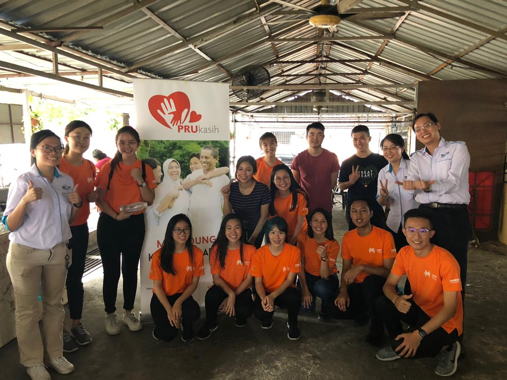
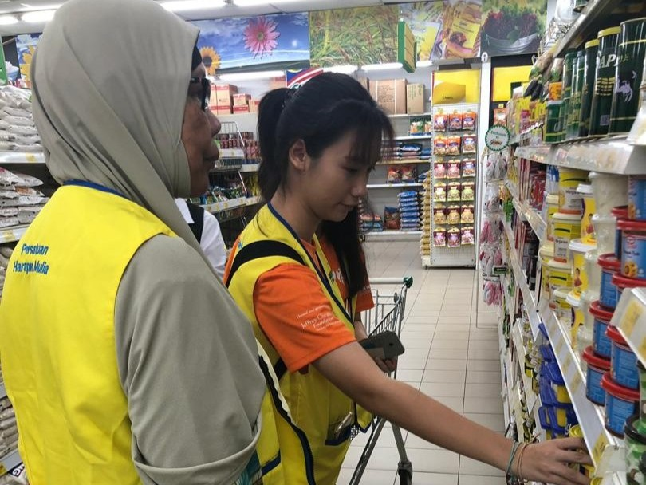

Volunteer Work
Growing up in a culture where giving back to the community whenever possible is highliy encouraged, I find great joy in volunteering and helping out whenever possible
Background
I grew up in a Malaysian Chinese community, where filial peity is encouraged. Furthermore, contributing to local communities is also encouraged. I grew up around people who have done so and led by example, and I was inspired to do the same.
My parents donated and helped out the community whenever they could. In secondary school, where everyone has more independance as teenagers, all of us would collectively do charity work whenever possible with supervision and guidance of seniors and alumni.
Main Volunteer Work
Famine 30
Famine 30 is a charity event held anually by World Vision. There would be many different sub-groups under World Vision.
I was typically under the Ali de Speranza group, as that's where most of the people I knew were in. Participants would go around asking for donations to help those in severe famine. After the donations are collected and totalled, a 2 day 1 night camp lasting 30 hours is held for those ages 15 and above while a 1 day event lasting 8 hours was held for those who were not of age.
During the camp / event, participants were not allowed to eat and were given various drinks to last the hours required, On the 1st day, events are held locally by each sub-unit in their local community and location of choice, typically a school, with events, talks, and community prepared performances. On the 2nd day, all sub-units are gathered in a football stadium to attend the concert and countdown to break fast together.
Famine 30 is a charity event held anually by World Vision. There would be many different sub-groups under World Vision.
I was typically under the Ali de Speranza group, as that's where most of the people I knew were in. Participants would go around asking for donations to help those in severe famine. After the donations are collected and totalled, a 2 day 1 night camp lasting 30 hours is held for those ages 15 and above while a 1 day event lasting 8 hours was held for those who were not of age.
During the camp / event, participants were not allowed to eat and were given various drinks to last the hours required, On the 1st day, events are held locally by each sub-unit in their local community and location of choice, typically a school, with events, talks, and community prepared performances. On the 2nd day, all sub-units are gathered in a football stadium to attend the concert and countdown to break fast together.
Sunway Student Volunteer
In college, I was fortunate to join the volunteer club. 2 notable events that left an impact on me were helping the elderly in poverty buy groceries and giving free medical checkup at the side of the road for the homeless.
In the former, my partner and I were assigned a lovely elderly woman whose kids were too busy to visit her most of the year. She was so tight on money that she had to contemplate whether she could afford a bar of chocolate. In the end, my partner and I decided to buy her some chocolate and she teared up while giving us a hug.
In the latter, I barely had any time to do anything else but help out wherever I could. I was moved by the compassion the volunteer doctors showed on site despite their fatigure from daily work.
In college, I was fortunate to join the volunteer club. 2 notable events that left an impact on me were helping the elderly in poverty buy groceries and giving free medical checkup at the side of the road for the homeless.
In the former, my partner and I were assigned a lovely elderly woman whose kids were too busy to visit her most of the year. She was so tight on money that she had to contemplate whether she could afford a bar of chocolate. In the end, my partner and I decided to buy her some chocolate and she teared up while giving us a hug.
In the latter, I barely had any time to do anything else but help out wherever I could. I was moved by the compassion the volunteer doctors showed on site despite their fatigure from daily work.
Image Gallery
2018: Visit to Old Folks' Home
2019: Sunway Student Volunteer briefing

2019: Sunway Student Volunteer after briefing

2019: Aiding in buying groceries
2016: Famine 30
 2019: Famine 30 committee member name cards
2019: Famine 30 committee member name cards
2019: Famine 30, group I am supervising